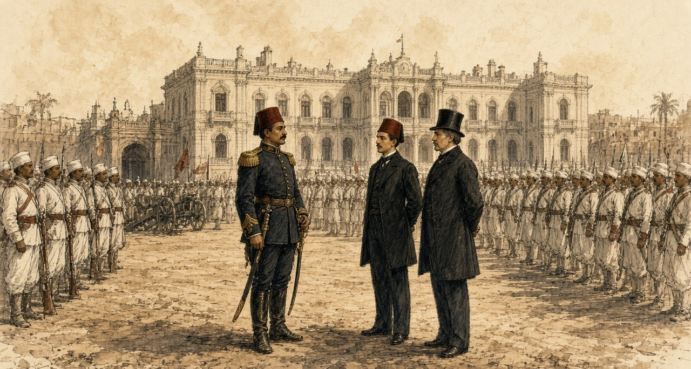
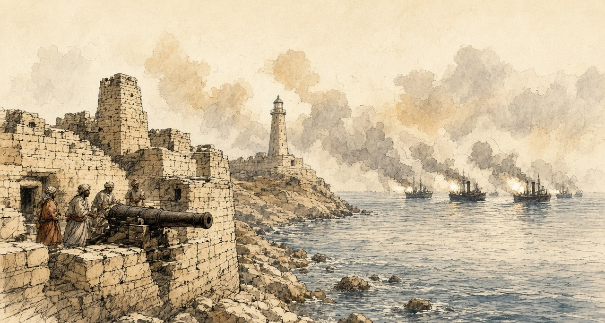
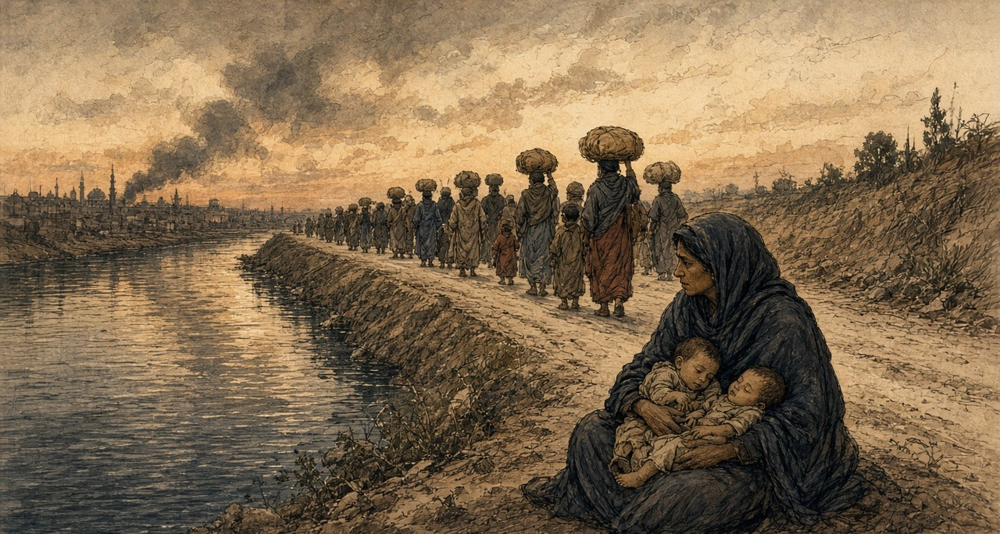
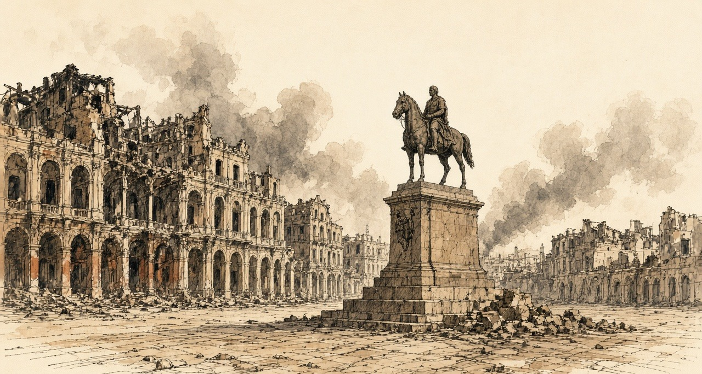
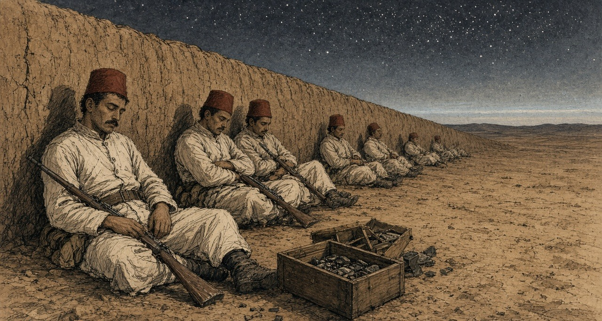
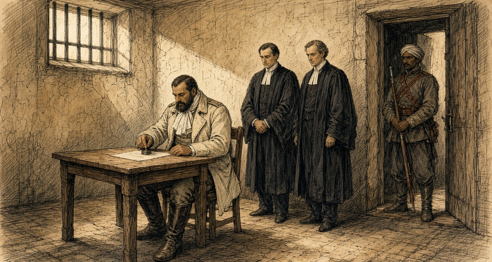

Chapter 5
Occupation of Egypt, 1882
Cairo, Alexandria, London, Tel el-Kebir, and Suez, 1879 to 1885
The coupon of May 1878 was paid. That summer Ismail Pasha took a ministry with two Europeans in it, Nubar Pasha presiding and the Englishman Charles Rivers Wilson at the Ministry of Finance. Wilfrid Scawen Blunt, who knew the men, wrote that "the nine millions advanced by the Rothschilds went mostly in paying the more urgently immediate calls, and not a tax was reduced or a demand remitted." Wilson began cutting the native officials. "What made it the more easy for him," Blunt wrote of the Khedive's chance to turn the anger on his Christian ministers, "was that in these retrenchments no European salaries were cut down."
The army was cut too. The officers' pay was in arrears. The new ministry paid part of what was owed and put a large number of officers on half-pay. Evelyn Baring, then a commissioner of the debt in Cairo, called it "especially harsh and impolitic" to dismiss so many men "without, in the first place, fully liquidating the arrears of pay due to them," and wrote that "many officers and their families were reduced to a state of complete destitution." The British consul-general, Lord Vivian, reported what came next: "by an unparalleled act of folly, the Minister of War summoned the remaining 2000 officers up to Cairo from various parts of the country to receive a portion of their arrears of pay and to deposit their arms with the authorities. He thus grouped together a seething mass of 2500 discontented officers, the garrison of Cairo consisting only of 2600 troops, a large proportion of whom had undoubted sympathy with the grievances of the mutineers."
* * *
Abbassiyeh and the Ministry of Finance, Cairo, 18 February 1879
Said the officer to us, go home. Home, with what. In my belt nothing, and the pay of the months they owe it to me. Said he, the new ministers, no money they have. Said I to myself, the money for the Franks, it they have.
Slept we in the barracks without bread. In the morning came the students of the military school, walking in one body to the Ministry of Finance, and with them officers in their swords. Walked we behind them, some of us. Not many. Some.
At the Ministry, a carriage at the door, and getting into it Nubar Pasha. Ran the young men at him and seized him. Pulled one his moustache. Struck another his ear, then the other ear. Stood I behind, and my heart, it beat in my throat. Then took they him inside, him and the Englishman, and shut the doors on them.
After a time came the Effendina himself in his carriage, and with him the colonel of his guard. Opened the crowd for the carriage, and men cried his name. Went he up into the building and came down, and ordered us to go home. We did not go. Said a man, let us settle our accounts ourselves. Ordered the Effendina the soldiers to fire. Raised they their rifles and the sound came, and I fell on my face in the street with my hands over my head. Then lifted I my head. Above us they fired, over the heads. The colonel, our blood he did not want it.
Went I back to Abbassiyeh that night. The arrears, a part of them they paid it. The rest, God knows it.
* * *
Cairo and Constantinople, February to June 1879
Two accounts of that morning survive. Vivian's, which Baring printed, says Nubar and Wilson were "mobbed by a crowd of officers armed with swords," dragged into the Ministry of Finance and shut in while the mutineers cut the telegraph wires. The Khedive came and ordered the rioters out. "If," he said, "you are my officers, you are bound by your oath to obey me; if you refuse, I will have you swept away." There were cries of "Death to the dogs of Christians." When the crowd at the gates would not disperse he ordered up the troops. "They fired in the air," Vivian wrote, "but a few soldiers were wounded by the mutineers' revolvers, and a few of the rioters received bayonet wounds."
The other account is Ahmed Urabi's, given to Blunt in Arabic twenty-four years later. Urabi was a lieutenant-colonel at Rosetta, called to Cairo the day before "to deal with the case of a number of soldiers that had been disbanded by the new Ministers without their arrears of pay or even bread to eat, and who were at Abbassiyeh." He said the Khedive's own servants got up the demonstration among the students of the military college. "They were joined on the way by some of the disbanded soldiers and officers, not many, but some. At the Ministry they found Nubar getting into his carriage, and they assaulted him, pulled his moustache, and boxed his ears." Ismail ordered Ali Bey Fehmy, the colonel of his guard, to fire on the students, "but Ali Fehmy ordered his men to fire over their heads and nobody was hurt."
Nubar resigned. Urabi was blamed and sent away from his regiment to Alexandria, where his duty was to act for the sheikhs of Upper Egypt, "whose arrears of taxes in the shape of beans and other produce were to be collected and sent to Alexandria in security for money advanced to Ismail" by lenders there.
In April Ismail dismissed his European ministers. They found out, Charles Royle wrote, only "when, on going to their offices, they found their places already occupied by their successors." The Khedive's senior officers swore "to bear true allegiance to the Khedive, and to resist all the enemies of the country, of himself, and of his family." London and Paris pressed the Sultan. On 26 June 1879 a telegram came to Cairo addressed "to the ex-Khedive Ismail Pasha": "Il est prouvé que votre maintien au poste de Khédive ne pouvait avoir d'autre résultat que de multiplier et d'aggraver les difficultés présentes." His son Tewfik was named in his place. Many of Ismail's valuables, Baring noted, were already aboard his yacht.
* * *
Cairo, November 1879 to July 1880
With Tewfik the Control came back, Baring for England and M. de Blignières for France. Before they reached Egypt the government asked them by telegraph whether it should borrow to meet its payments. Baring set down their answer: "If the Tribute could not be paid, so much the worse for the Tribute." Government servants would be paid first, and the taxes "should on no account be taken in advance." On 1 November 1879 the interest due on the Unified Debt was £1,989,000. The commissioners of the debt held £1,147,000. The bondholders got 4 per cent.
On 1 January 1880 the Controllers proposed 4 per cent as the fixed rate. "So far from producing a bad effect," Baring wrote, "Unified Stock rose from 51 to 56." Of the £1,684,000 still owing on coupons only partly paid, "We cannot," they wrote, "hold out the least hope that these sums will ever be paid." They put the year's revenue at £8,562,000. Tribute and administration would take £4,323,000, "thus leaving £4,239,000 available for the creditors of the Egyptian Government."
Some of the weight came off the fellah. The law of the Moukabala was repealed on 6 January, and on 17 January the poll tax of £205,000 a year was abolished. Every taxpayer was handed an extract from the village register showing what he owed and the days he would be called to pay. That summer the British consuls reported "a general feeling of satisfaction." The village money-lenders' rates had fallen by 50 per cent, and "the use of the courbash was greatly diminished."
Then the settlement. On the international Commission of Liquidation, Baring wrote, some members wanted a margin left for the country, "whilst others took a more optimistic view of the revenue and endeavoured, in the bondholding interest, to keep the administrative expenditure down to the lowest possible figure." The Khedive signed the Law of Liquidation on 17 July 1880. Revenue was taken at £E8,362,000. The whole administration of Egypt was fixed at £E4,520,000 a year. Interest stayed at 4 per cent, and £E5,600,000 of new Preference Stock went to pay the floating debt. Baring judged it fair but for one defect: "too large a proportion of revenue (66 per cent) was mortgaged to the bondholders, whilst the balance left at the disposal of the Government was insufficient."
A petition was going round the officers' messes. "It concluded with a threat that the petitioners might have recourse to the sword to attain their ends." In June 1880 Baring left for India, and Sir Auckland Colvin of the Indian Civil Service took his chair as Controller-General.
* * *
Kasr el-Nil and the Abdin Square, Cairo, 1 February and 9 September 1881
Urabi now had a regiment at Abbassiyeh. "I was especially in ill favour," he said, "because I had refused to allow my men to be taken from their military duty and put to dig the Tewfikieh Canal, which it was the practice to make them do without extra pay." In January 1881 he and two other colonels petitioned the prime minister, Riaz Pasha, against a Minister of War who was raising Circassians over native officers. Riaz read it in an inner room and came out. "Your petition," he said, "is muhlik," a hanging matter. Urabi answered: "Ye saat le Basha, is Egypt then a woman who has borne but eight sons and then been barren?"
On 1 February the colonels were called to the Ministry of War at Kasr el-Nil, arrested, and put before a court-martial. "Whilst the trial was proceeding," Baring wrote, "the officers and men of their regiments arrived, and broke into the room where the Court was sitting. They treated the Minister of War roughly, destroyed the furniture, and delivered the Colonels." The minister was dismissed that day.
On 9 September, believing they were marked for murder, the colonels marched. Urabi sent the Khedive word that the army would come to the Abdin Palace at the afternoon prayer for his answer.
The man at the Khedive's side that afternoon was the Controller-General. Colvin's account, which Baring printed, says he urged Tewfik to arrest Urabi himself. "Arabi Bey approached on horseback; the Viceroy called out to him to dismount. He did so, and came forward on foot, with several others and a guard with fixed bayonets, and saluted. I said to the Viceroy, 'Now is your moment.' He replied, 'We are between four fires.' I said, 'Have courage.'" Tewfik turned to a native officer and then back: "What can I do? We are between four fires. We shall be killed." He told Urabi to sheathe his sword. Urabi gave three points. The ministry must go, a parliament must be called, and the army must be raised to 18,000 men. He said the army had come on the part of the Egyptian people and would not retire until they were granted.

Urabi remembered other words. When he had made his three demands, the Khedive said, "I am Khedive of the country and shall do as I like." Urabi replied, "We are not slaves, and we shall never more be inherited from this day forth." Blunt took down the Arabic: Nahnu ma abid wa la nurithu ba'd el yom. Then the acting British consul, Sir Charles Cookson, came out and asked why a soldier demanded a parliament. "I said that it was to put an end to arbitrary rule, and pointed to the crowd of citizens supporting us behind the soldiers. He threatened me, saying, 'We shall bring a British army.'"
* * *
The Abdin Square, the same afternoon
From Abbassiyeh marched we, through the Hassaneyn quarter, the colonel on his horse in front. Came the people out of the shops and walked behind us. The cannons, to the west gate they went.
Stood we in the square in the sun with our rifles. Came out the Effendina, and with him the generals and a Frank. Said he something, and got down the colonel from his horse. Said my officer, steady, steady. My hands on the rifle, they ran with sweat.
This colonel, when they wanted to take us to dig the Tewfikieh canal, refused he. Other regiments, to the digging they took them, and the pay of the digging, none. For this they hate him in the palace. For this we stand.
Went the Effendina back inside. Went the Englishman in and came out, and went in, and came out. Behind us the crowd, more and more. At the end came the word down the ranks, the ministry gone, and from the front the shout, long live the Effendina. Shouted the men. Shouted I. Then marched we back to Abbassiyeh in the dark, quiet.
* * *
Cairo and London, January to May 1882
Ten days before Abdin, Sheikh Mohammed Abdu, who edited the official journal, had warned Urabi: "I foresee that a foreign occupation will come and that a malediction will rest for ever on him who provokes it." That winter a Chamber of Notables met, landholders and village headmen from the provinces, and asked to vote the budget.
The budget had two parts, the revenues assigned to the debt and the rest. The Notables asked only for the rest. Blunt put their case: since the Control stood in the country as guardian of the foreign obligations, "and as the interest on the debt amounted only to one-half of the revenue, the remaining half ought to be at the disposal of the nation." Baring's own figure for the bondholders' share was 66 per cent.
On 8 January 1882 Britain and France sent the Khedive a Joint Note. They called his rule the only guarantee of "the good order and development of general prosperity in Egypt, in which France and Great Britain are equally interested," and said they would "guard by their united efforts against all cause of complication, internal or external, which might menace the order of things established in Egypt." Colvin had written to London days before: "In fact, the Egyptian administration is a partnership of three."
On 17 January Malet and Colvin gave Blunt a brief to carry to the Notables. He kept the paper. "The control of the Budget was an international matter. Therefore it should be left untouched by them." Sultan Pasha, the Chamber's president and a cautious man, said the ministry's draft law was "like a drum; it made a great sound but was hollow inside." Lord Granville wired Malet that caution was needed, "regard being had to the pecuniary interests on behalf of which Her Majesty's Government have been acting." On 20 January Malet wired back: "Armed intervention will become a necessity if we adhere to the refusal to allow the Budget to be voted by the Chamber."
The two consuls-general told the prime minister that "the Chamber could not vote the Budget without infringing the Decrees establishing the Control." On 2 February a deputation told the Khedive "that the right to vote the Budget was not one for discussion with foreign Powers." Tewfik told Malet he "had no force to resist." Within days Mahmoud Sami was prime minister and Urabi was Minister of War.
That spring, walking through St James's Park, Blunt asked Lord Rosebery his views on Egypt. "I have no views at all but those of a bondholder," Rosebery said. His wife was a Rothschild.
* * *
Alexandria, 11 June 1882
By late May English and French ironclads lay off Alexandria. Baring quoted a report that Urabi's return to power was taken by the natives as a sign that the Christians would be expelled, "that they were to recover the land bought by Europeans or mortgaged to them, and that the National Debt would be cancelled." On 30 May Cookson wired: "Every day's delay increases the dangerous temper of the soldiery, and their growing defiance of discipline."
On Sunday 11 June, about one in the afternoon, a fight broke out near the Café Crystal in the Rue des Soeurs. Royle gives the story as it was told. A Maltese and a native coachman or donkey-boy quarrelled, the Maltese was beaten with a stick, he answered with a knife, and by one account he killed the other man. The riot broke out in three places almost at once. Crowds came up the streets with naboots, the heavy sticks of the town, crying "Death to the Christians!" Near the police headquarters, whenever a European came in sight, the cry went up in Arabic: "Oh, Moslems! Kill him! Kill the Christian!" Police and soldiers joined in. A Greek ship's master was pulled from his carriage and bayoneted. In the Rue des Soeurs three European bodies lay in a heap. Cookson was clubbed down with a naboot. A missionary, Mr. Ribton, was beaten to the ground three times trying to shield his daughter, and when his body was found his head was too battered to be known. The dead were dragged into back streets, stripped and thrown into the sea. About 7,000 troops waited in barracks under arms until after six.
The hospitals received forty-nine bodies, forty-four of them European, and seventy-one wounded, thirty-six European, two Turkish and thirty-three native. Estimates of the dead ran to 150 Europeans, "besides natives," and fewer than half could be proved. Natives were buried in secret. In the Commons the Irish member F. H. O'Donnell called it "a desperate riot between Arabs, Greeks, and Maltese, in which European roughs were aggressors, and in which four Arab lives were taken for every one European," and cited a foreign writer who put the Arab dead at 600 or 700. The governor arrested two or three hundred natives. By 17 June about 14,000 Christians had left the country.
* * *
Alexandria, 11 July 1882
On 10 July Admiral Sir Beauchamp Seymour gave the military commandant until sunrise "to-morrow, the 11th instant," to hand over, "for the purpose of disarming, the batteries on the isthmus of Ras-el-Tin and the southern shore of the harbour of Alexandria." The French squadron would not join and left. By dark the British warships were alone.
"At 7 a.m., on the 11th," Seymour reported, "signalled from the Invincible to the Alexandra to fire a shell into the recently armed earthworks termed the Hospital Battery, and followed this by a general signal to the fleet 'Attack the enemy's batteries.'" The Alexandra, Superb, Sultan, Temeraire, Inflexible, Monarch, Invincible and Penelope opened together, about two discharges a minute. The Inflexible's shells weighed 1,700 lb. When they struck the Lighthouse Fort under an embrasure, Royle wrote, they threw dust and broken stone as high as the lighthouse, and when it cleared the gun's crew sent another shell back.
About 2,000 Egyptian artillerymen manned the forts under Toulba Pasha. At Mex an adjutant-major held the works with four officers and 150 men. Fifty were killed and forty-eight wounded. Along the inner line, sixty-five were killed and 150 to 200 wounded. At Ras el-Tin and Fort Adda at least fifty were believed killed and 150 wounded. The chief of police reported that stray shell had killed and wounded between 150 and 200 citizens. One shell at the Moharrem Bey Gate killed two police officers and six of their men. Toward five o'clock the mosque inside Fort Pharos fell in on the wounded sheltering behind its walls.

The British lost five killed and twenty-eight wounded. For the Egyptian dead, the Frenchman John Ninet gave 680 and General Stone, the Khedive's American chief of staff, 700. The Cairo paper El Taif printed: "No soldiers ever stood so firmly to their posts under a heavy fire as did the Egyptians under the fire of twenty-eight ships during ten hours."
* * *
The Boulevard de Rosette, Alexandria, the same day
Before the sun, went my husband to the fort of Ras el-Tin. Said he, sit in the house, you and the children, and do not go out. Then the guns, and the house, it shook, and from the ceiling the dust came down on the children's heads. Put I my hands over the ears of the little one, and she cried, and I could not hear her.
In the middle of the morning came the carts up from the sea. Went I out. On the carts the dead, the soldiers, their clothes taken off them, the bodies tied in with ropes. Ran the women after the carts, and I ran. Struck they their faces and cried out, and I cried out with them. Looked I in every cart for his face. This one, no. This one, I could not see it.
After the dead came the wounded, in carriages and in carts, and their wounds I could not look at them. Went the carts to the native hospital, and there buried they the dead at once, as they came. Asked I a man, from Ras el-Tin, who. Said he, sister, go home. God is merciful.
At the noon hour small boys went by with a green flag, beating on petroleum tins and calling on God and the Prophet. The guns did not stop.
When the guns stopped, took I the children and a bundle, and the rest I left it. On the bank of the Mahmoudieh, the people, a river of them, walking out of the city. No one spoke. Walked we until the night came down. Sat I by the water with the children asleep on my knees, and looked back, and in the city no light at all. Him I did not find. La hawla wa la quwwata illa billah.

* * *
Alexandria, 12 to 23 July 1882
The leaving went on through the night and into the morning. The trains from Moharrem Bey station carried people inside, "but on the roof, the steps, and even the buffers of the carriages." On the 12th, Baring wrote, "the Egyptian garrison retreated, having first set fire to the town, which was pillaged by the mob." Cotton soaked in petroleum was thrown into houses, paraffin poured over furniture and lit, bedding soaked in petroleum piled against doors that would not open. "On every side the smell of petroleum was distinguishable." At the gates the looters set on the women leaving the harems, and in their haste for the jewellery "even cut their ears and wrists, and to silence their cries stunned them with blows from their sticks." By the morning of the 13th Alexandria "presented the appearance of a vast bonfire." The Place Mehemet Ali burned, and all the streets from it to the sea. In the middle of the square, Royle wrote, "the statue of Mehemet Ali on horseback in the centre alone remained untouched."

Who set the first fire was argued from that week. Royle held that apart from the harem buildings of the Ras el-Tin palace, which a shell set alight a little after ten on the 11th, "the British missiles did not create a single conflagration." O'Donnell told the Commons he "was perfectly certain of this, that the shells from the English Fleet originally set fire to Alexandria before a single incendiary extended the conflagration," and members cried "No, no!" The War Office and the Admiralty had wanted to land troops as soon as the firing stopped. The Cabinet refused. Gladstone told the House a landing would have been "grossly disloyal in the face of Europe and the Conference."
Seamen and marines went ashore with Gatling guns from the 13th. Lord Charles Beresford was made chief of police. "Those guilty of pillaging were flogged, and incendiaries were sentenced to be shot." A Black man caught setting fire to houses was court-martialled, tied to a tree in the Place Mehemet Ali, and shot by a party of sailors, the first public execution, on the first day of clearing the streets. A proclamation of 20 July ordered the shooting of anyone taken in the act of incendiarism, or taken a second time for pillage. On the 23rd three natives and one Greek were shot.
Inland the killing ran the other way. At Tanta, by the count of the prefect of police, fifty-one Europeans were murdered and buried, and about as many again killed and thrown into the canal. At Benha ten Greeks and three Jews were murdered. At Galioub a family was taken off a train and put under the wheels.
An international commission later weighed what Alexandria had lost. It awarded 106,820,236 francs, £4,341,011: £1,070,007 for houses, £1,385,402 for furniture, £1,735,806 for merchandise. The bill went to the Egyptian treasury.
* * *
The House of Commons, 17 July to 8 August 1882
On 17 July John Bright explained why he had left the Cabinet. "For 40 years at least I have endeavoured, from time to time, to teach my countrymen an opinion and doctrine which I hold—namely, that the moral law is intended not only for individual life, but for the life and practice of States in their dealings with one another. I think that in the present case there has been a manifest violation both of International Law and of the moral law." Gladstone replied: "Agreeing with him in the principle, we disagree in the application."
On 24 July Gladstone asked for £2,300,000, £1,400,000 for the Navy, most of it for transports, and £900,000 for the Army. To pay for it he proposed "an addition of 3 d. to the second half-year of the Income Tax of 1882–3, which would be equal to an addition of 1½ d. for the tax of the whole year, making the tax of the whole year 6½ d." He told the House: "The insecurity of the Canal is a symptom only, and the seat of the disease is in the interior of Egypt, in its disturbed and its anarchical condition." Of the aim he said: "We hope to put down that tyranny which now reigns in Egypt, and when that preliminary step may have been achieved—and God grant it may be soon—we hope to promote a settlement of Egyptian affairs, based upon the maintenance of international right, based upon the avoidance of every selfish purpose and design."
On 25 July the Speaker read the Queen's message calling out the Army Reserve "for the protection of the interests of the Empire." On 31 July the House voted to charge the Indian troops sent to Egypt on the revenues of India, "subject to any future decision of Parliament," by 140 to 28. On 8 August Sir Wilfrid Lawson asked which international engagements made "the voting of the unassigned portion of the Budget by the Egyptian Chamber of Delegates" a breach. Sir Charles Dilke answered that the English and French governments had agreed "that it would be unadvisable to publish at present the Papers relating to it."
Gladstone kept his own accounts. At the end of 1881, as H. C. G. Matthew printed them, he held £51,500 nominal of the Egyptian Tribute loan of 1871, entered at £40,567, about 37 per cent of his investments. In the summer of 1882 that stock stood at 57. By December it stood at 82.
* * *
Tel el-Kebir, 12 and 13 September 1882
Wolseley landed at Ismailia, on the canal, and came west along the railway and the Sweet Water Canal toward the lines Urabi had dug across the desert at Tel el-Kebir. Urabi had called for one-sixth of the men of every province, and every old soldier back to the ranks. On 12 September 25,000 rations were served out inside the lines.
Came the sheikh el-beled to our door with the paper. Said he, you were a soldier, go back. Said I to my son, the buffalo, the water, the land, on you now. Kissed I my mother's hand and went.
At Tel el-Kebir the earth thrown up in a long wall, and behind it we. Gave they each of us a Remington, and along the trench the boxes of cartridges open, every three or four steps a box. Said the sergeant, a thousand and fifty in each one. Counted I the boxes and stopped counting.
The night of the twelfth ate we the rations sitting against the wall. Said the man beside me, from a village by Belbeis, the English, by day they will come, and from far we will see them on the plain. Lay we down on our rifles behind the wall, and I slept.

Woke I and still dark, and the gun of the picket firing. Then all the guns, ours, and in front of us shouting, a sound I had not heard in my life. Stood I and fired into the dark, at what I do not know. Came men over the wall in the grey light, Scots in their skirts, with the bayonets. One of ours stood up before me, and the bayonet went into him, and he sat down. In the trench fought the men with the bayonet and the butt and the hands. The Sudanese, they did not run. Body to body they fought them.
Ran I. God forgive me, I ran. Threw I the rifle. Behind us came the horsemen with the swords, and I heard them before I saw them, and a man running beside me, they cut him down. Stopped I and put up my hands and cried, aman, aman. Looked the horseman at me and went past.
Walked I. Along the canal walked we, many, and none with a rifle. In the villages they gave me bread. When came I to our door my mother did not know me, and then she knew me, and she put her hands on my face and did not let go.
* * *
Tel el-Kebir and Cairo, 13 to 15 September 1882
The first shots came at 4.55 a.m., from an Egyptian picket 150 yards out, at the Highland Brigade. The defence, Royle wrote, "had been sleeping on their arms behind the parapets." The Highlanders' attack "was made entirely with the bayonet, not a shot being fired until the men were within the enemy's lines." Urabi's headquarters and the canal bridge were taken at 6.45 a.m.
Urabi was a mile and a half to the rear. "I was still asleep when we heard the firing close to the lines," he told Blunt. "I said my prayer and galloped to where we had a reserve of volunteers, and called to them to follow me to support the front line. But they were only peasants, not soldiers, and the shells were falling among them and they ran away. I then rode forward alone with only my servant Mohammed with me, who, seeing that there was no one with me and that I was going to certain death, caught hold of my horse by the bridle and implored me to go back." They rode along the Ismailia Canal to Belbeis.
"The trenches, after the battle, were found to be filled with dead, mostly bayoneted, and the ground in rear as far as the railway station was dotted with the bodies of those shot down in retreat." The cavalry "cut down the fugitives by scores." Most runaways "threw away their arms, and, begging for mercy, were left unmolested," because prisoners would have slowed the ride to Cairo. A naval officer who went into one redoubt next day called it "a perfect charnel-house." The Egyptian dead were "not far from 2,000." Their wounded were never counted. In the four days after the battle 534 were treated at Tel el-Kebir, with twenty-seven capital operations. The British lost fifty-seven killed, 380 wounded and twenty-two missing.
The cavalry reached Cairo at sunset on the 14th. At half past one that night the prefect of police told Urabi that General Drury Lowe wished to see him at Abbassiyeh. He went with Toulba Pasha. "We thereupon took off our swords and delivered them to General Lowe," Urabi stated, "telling him at the same time that we only gave ourselves up to the English Government because we were confident England would deal with us justly."
* * *
The Daira Saniya prison, Cairo, October to December 1882
On 5 October Urabi was moved to the Khedive's prison. He wrote out what followed for his English counsel, A. M. Broadley. He was searched four times by the palace servants, "even to the length of taking off my boots from my feet." On the night of the 9th, after he had fallen asleep, about ten men came into his cell. "One of them said, 'Arabi, do you know me?' I said 'No; who are you, and what do you want from me at such a time?' He said, 'I am Ibrahim Agha, whom you were searching for. You dog! You pig!' and he spat upon me three times." It went on for about eight minutes. Urabi believed the man had been sent to kill him.
To Broadley he said: "all Egypt was with me—the Khedivial family—the old men of Mehemet Ali's time, the Ulemas, the army, and the peasants, but in the presence of prison, arrest, torture, and threats, who will own me now?"
Lord Dufferin, sent from Constantinople, settled the ending. Urabi would plead guilty to rebellion and be sentenced to death, and the sentence would be commuted at once to exile. On the morning of 3 December 1882, dressed in his military trousers, a light drab overcoat and a white silk scarf, he signed and sealed the plea: "Of my own free will, and by the advice of my Counsel, I plead guilty to the charges now read over to me." Under a second paper, his word to Dufferin to stay where England sent him, he wrote: "AHMED ARABI, the Egyptian." The court sentenced him to death. The Khedive's decree commuted it to perpetual exile from Egypt and its dependencies. The 570 feddans he had built up from his father's eight and a half were confiscated.

On 23 November he had written to Blunt: "I care nothing for the position I am in—for prison, for insults, or for what may happen after, since I have offered myself a legacy (wakf) to the freedom of my country." When an agent brought the exiles a letter thanking the Khedive "for his handsome treatment towards us," Urabi asked Yacoub Sami whether he had signed it. "I would rather be cut in pieces first. I have said, and say, that Tewfik is unfit to reign over us. How then can I lie and promise to pray for his prosperity?"
On Christmas Day the seven were driven by back streets to the Kasr el-Nil barracks, one or two without time to put on their boots. Egyptian troops stood in a square, and British soldiers watched from the galleries and cheered at intervals. An officer read the decree striking them from the army. As Urabi got back into his carriage a captain named Elfi cried out: "Oh Arabi, you have brought the English to Egypt!" Broadley's man Hasan said afterward: "God is great! You see even the Khedive dare not touch Arabi."
Some of the exiles were penniless. Broadley got each an advance of £30 on the allowance they would draw in Ceylon. Ladies of Cairo, quietly, for fear of Tewfik, sent Urabi portmanteaus and clothes. The Egyptian government had chartered a large steamer, the Mareotis, "wholly regardless of expense." Urabi gave Broadley his little black rosary and his carpet. On 26 December 1882 he and his six companions sailed from Suez.
* * *
Cairo and London, 1883 to 1885
Suleiman Sami, an officer charged with the burning of Alexandria, was hanged. Lord Randolph Churchill called it in the Commons "the grossest and vilest judicial murder that has ever stained the annals of Oriental justice." The Dual Control was abolished. On 3 January 1883 Granville told the Powers that Her Majesty's Government were "desirous of withdrawing" the British force "as soon as the state of the country and the organisation of proper means for the maintenance of the Khedive's authority will admit of it."
Baring came back to Cairo as consul-general on 11 September 1883. He found "the Government Treasury was well-nigh bankrupt," and the Europeans discontented "because the indemnities due to them for their losses during and after the Alexandria bombardment had not yet been paid."
The money was raised in 1885. By a convention of 18 March, Britain, Germany, Austria-Hungary, France, Italy and Russia undertook to guarantee "the regular payment of the annuity of £315,000" on a loan of £9,000,000 issued by the Egyptian government. On 17 July Mr. Ruston asked in the Commons whether the delay meant "very grave inconvenience" to the Egyptian Treasury, "and much suffering to those entitled to receive the Alexandrian indemnities." Messrs. N. M. Rothschild were agents for the issue in London, the Chancellor of the Exchequer said, at "£500 per £1,000,000, and reasonable incidental expenses." The loan was issued on Tuesday, 28 July 1885.
Mini-glossary
- Abdin (4 occurrences in this chapter): Palace and square in Cairo where Colonel Ahmed Urabi and the Egyptian army confronted Khedive Tewfik on 9 September 1881.
- Courbash (1 occurrences in this chapter): Heavy whip of hippopotamus hide used by tax collectors and village officials in 19th-century Egypt to enforce payment and labour.
- Effendina (5 occurrences in this chapter): Honorific Turkish-Arabic title ('Our Lord') used in Egypt to address the Viceroy or Khedive.
- Feddan (1 occurrences in this chapter): Egyptian unit of agricultural land area, slightly larger than an English acre (approximately 1.038 acres or 4,200 square metres).
- Fellah (1 occurrences in this chapter): Plural fellahin; Egyptian peasant cultivator or agricultural labourer whose crops and corvée labour underwrote the Khedive's debt and canal works.
- Khedive (19 occurrences in this chapter): Title of the autonomous Ottoman viceroys of Egypt, formally granted by the Sultan to Ismail Pasha in 1867 and held by his successors until 1914.
- Moukabala (1 occurrences in this chapter): Egyptian tax law of 1872 allowing landholders to redeem half their future land tax in perpetuity by paying six years' tax in advance to the Khedive.
- Naboot (2 occurrences in this chapter): Long, heavy quarterstaff of hard wood carried by Egyptian townsmen and watchmen.
- Sheikh el-beled (1 occurrences in this chapter): Village headman in Egypt responsible for naming men to the corvée and assisting state tax collectors.
- Wakf (1 occurrences in this chapter): In Islamic law, an inalienable charitable or religious endowment of property.
Important names
- Baring, Evelyn (Lord Cromer) (15 mentions in this chapter): British Commissioner of the Public Debt and long-serving Consul-General in Egypt (1883–1907).
- Blunt, Wilfrid Scawen (9 mentions in this chapter): English poet, anti-imperialist writer, and supporter of Ahmed Urabi and Egyptian nationalism.
- Churchill, Winston (1 mentions in this chapter): British cabinet minister (Home Secretary, First Lord of the Admiralty, War and Colonial Secretary, and Prime Minister) recurring across the Irish, Middle Eastern, and Indian settlements.
- Colvin, Auckland (4 mentions in this chapter): Indian Civil Service official and British Controller-General in Egypt during the 1881–1882 Urabi confrontation.
- Gladstone, William Ewart (4 mentions in this chapter): British Prime Minister and Chancellor of the Exchequer whose career spanned the 1840 Opium War debate, Irish land and Home Rule legislation, and the 1882 occupation of Egypt.
- Ismail Pasha (Khedive) (2 mentions in this chapter): Ruler of Egypt (1863–1879) whose foreign loans and canal expenditures led to the 1875 sale of Egypt's Suez Canal shares and European financial control.
- Nubar Pasha (2 mentions in this chapter): Armenian-Egyptian statesman and three-time Prime Minister of Egypt.
- Rothschild, Lionel de (2 mentions in this chapter): Head of N. M. Rothschild & Sons in London who advanced the £4,000,000 for the British government's purchase of the Suez Canal shares in 1875.
- Seymour, Beauchamp (2 mentions in this chapter): British admiral who commanded the bombardment of Alexandria on 11 July 1882.
- Urabi, Ahmed (27 mentions in this chapter): Egyptian army colonel and nationalist Minister of War who led the 1881–1882 movement against Khedivial autocracy and European financial control.
- Wolseley, Garnet (1 mentions in this chapter): British general who commanded the 1882 expeditionary force that defeated Ahmed Urabi's army at Tel el-Kebir.
Sources
- Cromer, Evelyn Baring, Earl of. Modern Egypt. Vol. 1. London: Macmillan, 1908. Chapter 5 (Vivian's despatch on the half-pay officers and the riot of 18 February 1879, the Khedive's words, "Death to the dogs of Christians," the shots in the air and the bayonet wounds); chapter 8 (the oath of April 1879, the Sultan's telegram of 26 June 1879, the yacht); chapter 10 (the Controllers' advice from Paris, the coupon of 1 November 1879, the report of 1 January 1880, the rise from 51 to 56, the £1,684,000, the 1880 budget, the repeal of the Moukabala, the poll tax, the register extract, the consuls' reports, the Law of Liquidation of 17 July 1880 and the 66 per cent, the officers' petition, Colvin's appointment); chapter 11 (the petition of January 1881, the court-martial of 1 February, Malet on 9 September, Colvin's account of Abdin, the three demands); chapters 13 and 14 (Colvin's memorandum, the Joint Note of 8 January 1882, Granville's and Malet's telegrams, Gambetta, the consuls' letter to Cherif, the deputation of 2 February); chapter 16 (Malet on the National Debt, Cookson on 30 May, Seymour's report (he was later Lord Alcester), the incendiaries, Gladstone's "grossly disloyal"); chapter 18 (Dufferin's arrangement of the plea, the exile from Suez on 26 December, Suleiman Sami and Lord Randolph Churchill, Granville's circular of 3 January 1883); and the opening of Part III (the Treasury and the unpaid indemnities in September 1883).
- Blunt, Wilfrid Scawen. Secret History of the English Occupation of Egypt. London: T. Fisher Unwin, 1907. For the Rothschild advance and the retrenchments of 1878; the Notables and the "one-half of the revenue"; the notes of 17 January 1882 on the budget as "an international matter"; Sultan Pasha's drum; Rosebery's "views of a bondholder." Appendix I, "Arabi's Account of his Life and of the Events of 1881-1882," told to Blunt in Arabic on 16 March 1903 at Sheykh Obeyd: his birth and land, the riot against Nubar, the disbanded soldiers at Abbassiyeh, the beans sent to Alexandria, the Tewfikieh Canal, Riaz and "muhlik," Abdin and "Nahnu ma abid wa la nurithu ba'd el yom," Cookson's threat, the morning at Tel el-Kebir, his servant Mohammed; and Sheikh Mohammed Abdu's account of his warning before Abdin.
- Broadley, A. M. How We Defended Arábi and His Friends: A Story of Egypt and the Egyptians. London: Chapman and Hall, 1884. For Urabi's written statement of 29 October 1882 on the prison and Ibrahim Agha; "who will own me now?"; the plea and the undertaking to Dufferin of 3 December 1882; the letter to Blunt of late November 1882 and the wakf; the refusal of the letter of thanks; the ceremony at Kasr el-Nil on 25 December 1882 and Captain Elfi; the £30 advances; the Mareotis; the rosary and the prayer carpet; the Khedivial decree of 21 December 1882.
- Royle, Charles. The Egyptian Campaigns, 1882 to 1885. New and revised edition. London: Hurst and Blackett, 1900. For the riot of 11 June 1882 and its casualty figures; the ultimatum of 10 July; the ships and the bombardment of 11 July, the Inflexible's shells, the Egyptian garrisons and losses at Mex, the inner line, Ras el-Tin and Adda, the police chief's figure for citizens, the Moharrem Bey Gate, the mosque in Fort Pharos, Ninet's and Stone's figures and the El Taif account; the carts of dead artillerymen, the wounded, the green flag and the petroleum tins, the Boulevard de Rosette and the native hospital, the fugitives on the Mahmoudieh Canal and the trains; the fire, the petroleum, the women at the gates; Beresford, the floggings, the execution in the Place Mehemet Ali, the proclamation of 20 July and the shootings of the 23rd; Tanta, Benha and Galioub; the Alexandria indemnity awards; Urabi's levy; and Tel el-Kebir: the rations, the cartridges, the hour of the first shots, the bayonet, the trenches, the cavalry, the redoubt, the Egyptian and British losses, and Urabi's statement on his surrender to Drury Lowe.
- Hansard, House of Commons Debates. HC Deb 17 July 1882, vol. 272, cc. 722-4 (Bright's personal explanation and Gladstone's reply); HC Deb 24 July 1882, vol. 272, cc. 1574-619 (Gladstone on the vote of credit, the income tax, the canal "a symptom only," and the war's object; O'Donnell on the riot and the fire); HC Deb 25 July 1882, vol. 272, c. 1682 (the Queen's message on the Army Reserve); HC Deb 31 July 1882, vol. 273, cc. 255-307 (the Indian revenues resolution and division); HC Deb 8 August 1882, vol. 273, c. 1145 (Lawson and Dilke on the Egyptian budget); HC Deb 17 July 1885, vol. 299, c. 1060 (Ruston on the guarantee and the Alexandrian indemnities); HC Deb 30 July 1885 (the Chancellor of the Exchequer on the Rothschild commission); HC Deb 31 July 1885, vol. 300, cc. 670-1 (Bourke on the Convention of 18 March 1885, the £315,000 annuity, and the issue of the loan).
- Matthew, H. C. G., ed. The Gladstone Diaries. Vol. 10, January 1881-June 1883. Oxford: Clarendon Press, 1990. Introduction, for Gladstone's own annual accounts: his holding of Egyptian Tribute loan stock at the end of 1881, its book value, its share of his portfolio, and its prices in 1882.